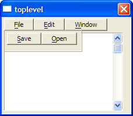

{POSITION}
Syntax
{POSITION= Direction }
{POSITION=dropdown=Dialog_Title
Control_Identifier
}
|
Argument |
Type |
Description |
|
|
Direction |
C
|
The starting position for a dialog box. Allowable values are: |
|
|
Value |
Description | ||
|
dropdown |
Causes the Xdialog to open underneath the control from which it was invoked. This is typically used when you want an Xdialog to emulate a drop down combo box. Dialog_Title is the title of the dialog box. Control_Identifier is any text within the control definition that uniquely identifies it. | ||
|
expandright |
Causes the Xdialog to open to the right of the current control. | ||
|
expandleft |
Causes the Xdialog to open to the left of the current control. | ||
|
remember=remember_name |
Causes the last position of the Xdialog to be stored in the registry (in a sub-key called remember_name ) and then the next time the Xdialog is opened, it opens in the same position. | ||
|
relative, remember=sticky_window |
Causes Alpha Anywhere to remember the position of the dialog by looking up its position in the sticky_window sub-key in the registry. | ||
|
mouse |
Opens the Xdialog at the mouse location. | ||
|
mouse,?N |
Take the current mouse cursor position, then go N units (always in inches) to the left(+) or right(-) of the mouse. | ||
|
?N,?M |
Sets the absolute position of the Xdialog in units (always in inches). These must be numbers and cannot be variables. | ||
|
flyover,flyover?N |
Causes an Xdialog to open under the current button. In this example, the vertical position is offset by N units (always in inches). | ||
|
Dialog_Title |
C |
The name of the dialog box containing the control. |
|
|
Control_Identifier |
C |
The new dialog will position below this control. |
|
Description
The {POSITION} command defines the starting position for a dialog box.

Limitations
Desktop applications only
Example
|
ui_dlg_box("toplevel",<<%dlg% <&File!file> <&Edit!edit> <&Window!window>; {initial_focus} %dlg%,<<%code% if a_dlg_button = "file" then a_dlg_button = "" ui_dlg_box("filedrop",<<%dlg1% {nocaption} {close_on_leave} {position=dropdown=toplevel file } <&Save> <&Open> %dlg1%) else if a_dlg_button = "edit" then a_dlg_button = "" ui_dlg_box("editdrop",<<%dlg1% {nocaption} {close_on_leave} {position=dropdown=toplevel edit } <&Copy> <&Paste> %dlg1%) else if a_dlg_button = "window" then a_dlg_button = "" ui_dlg_box("windowdrop",<<%dlg1% {nocaption} {close_on_leave} {position=dropdown=toplevel window } <&Close> <&Tile> %dlg1%) end if %code%) |
See Also